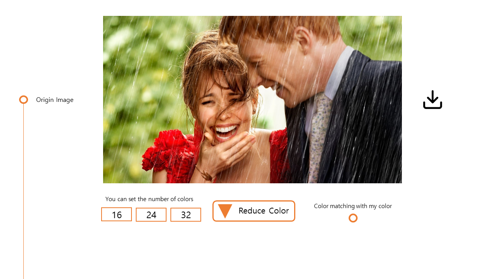
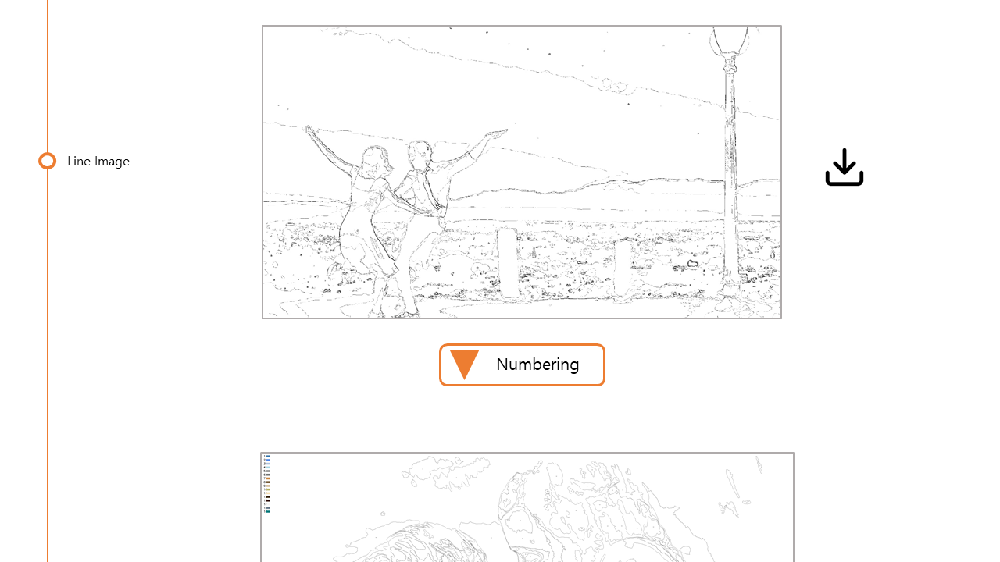

<!doctype html>
<html>
<head>
    <meta charset="utf-8">
    <title>EASY PIPO</title>

    <link rel="stylesheet" type="text/css" href="https://cdn.jsdelivr.net/gh/moonspam/NanumBarunGothic@1.0/nanumbarungothicsubset.css">
    
    <!-- import jquery -->
    <script src="https://ajax.googleapis.com/ajax/libs/jquery/3.6.0/jquery.min.js"></script>

    <!-- local js & css file import start -->
    <script type="text/javascript" src="{{ url_for('static', filename='js/fullpage.js') }}"></script>

    <link rel="stylesheet" href="{{ url_for('static', filename='css/diy_styles.css') }}">
    <link rel="stylesheet" href="{{ url_for('static', filename='css/how_to_use.css') }}">
    <link rel="stylesheet" href="{{ url_for('static', filename='css/fullpage.css') }}">

    <!-- font -->
    
</head>

<body>
 
    <script type="text/javascript">
        var kor_contain = `<div id='page_1' class='section' style='width: 100vw; height: 100wh;'>
            {% include 'menu_template.html' %}
            <div class='main'>
                <div class='top_menu'>
                    <label class='switch-button' >
                        <span class='kor'>한국어</span>
                        <span class='eng'> English</span>
                        <input type='checkbox' id='btn'>
                        <span class='onoff-switch'></span>               
                    </label>
                    <span class='early'>
                        이지피포는 자동으로 실제 이미지를 피포 페인팅 도안으로 바꿔주는 플랫폼입니다.
                    </span>
                </div>
                <div class='ex_image_early'>
                    
                </div>
                <div class='ex_text_early'>
                    <ul>
                        <li>이미지 파일을 열어주세요.</li>
                        <li>jpg, png 확장자 파일만 가능합니다.</li>
                        <li>이미지 파일 크기는 8MB로 제한합니다.</li>
                        <li>Go 버튼을 누르면 작업이 시작됩니다.</li>
                    </ul>
                </div>
            </div>
            </div>
            <div id='page_2' class='section' >
            <div class='ex_image'>
                
            </div>
            <div class='ex_text'>
                <ul>
                    <li>원본 이미지가 보여집니다.</li>
                    <li>좌측에는 작업 진행 구간이 표시됩니다.</li>
                    <li>우측 다운로드 버튼을 통해 이미지를 다운로드 할 수 있습니다.</li>
                    <li>줄이고자 하는 색상 개수를 입력할 수 있습니다. (기본값 16, 24, 32)</li>
                    <li>지정된 색상으로 변환하고 싶으면 사진 우측 하단의 버튼을 클릭해줍니다.</li>
                    <li>Reduce Color 버튼을 누르면 이미지에서 색상을 줄이는 작업이 진행됩니다.</li>
                    <li>예상 소요 시간 3분</li>
                </ul>
            </div>
            <div class='ex_image'>
                
            </div>
            <div class='ex_text'>
                <ul>
                    <li>3가지 종류의 색상 단순화 이미지가 나타납니다.</li>
                    <li>하단 돋보기 버튼을 통해 확대해서 볼 수 있습니다.</li>
                    <li>상단 다운로드 버튼을 통해 이미지를 다운로드 할 수 있습니다.</li>
                    <li>이미지를 클릭하면 이미지가 선택됩니다</li>
                    <li>Draw Line 버튼을 누르면 색상 경계선을 기준으로 선을 그리는 작업이 진행됩니다.</li>
                    <li>예상 소요 시간 1분</li>
                </ul>
            </div>
            </div>
            <div id='page_3' class='section'>
            <div class='ex_image'>
                
            </div>
            <div class='ex_text'>
                <ul>
                    <li>단순화된 이미지에서 색상 경계선을 따라 선이 그려집니다.</li>
                    <li>우측 다운로드 버튼을 통해 이미지를 다운로드 할 수 있습니다.</li>
                    <li>Numbering 버튼을 통해 선 내부에 색상 번호를 기입할 수 있습니다.</li>
                    <li>예상 소요 시간 5분</li>
                </ul>
            </div>
            <div class='ex_image'>
                
            </div>
            <div class='ex_text'>
                <ul>
                    <li>색상 번호가 기입된 결과 이미지가 나타납니다.</li>
                    <li>색상 레이블을 넣고 싶으면 하단의 Input Color Label 버튼을 눌러주세요.</li>
                    <li>하단 다운로드 버튼을 통해 최종 이미지를 다운로드 할 수 있습니다.</li>
                </ul>
            </div>
            </div>`;

        var eng_contain = `<div id='eng_page_1' class='section'>
        {% include 'menu_template.html' %}
        <div class='main'>
            <div id='eng_top_menu' class='top_menu'>
                <label class='switch-button' >
                    <span class='kor'>한국어</span>
                    <span class='eng'> English</span>
                    <input type='checkbox' id='btn' checked>
                    <span class='onoff-switch'></span>               
                </label>
                <span class='early'>
                    Easy Pipo is a platform that automatically changes the image into a pipo painting canvas
                </span>
            </div>
            <div class='ex_image_early'>
                
            </div>
            <div class='ex_text_early'>
                <ul>
                    <li>Open Image File.</li>
                    <li>File extension is only JPG and PNG</li>
                    <li>Limit the Image file size to 8MB</li>
                    <li>Click the GO button to start the operation</li>
                </ul>
            </div>
        </div>
        </div>
        <div id='eng_page_2' class='section'>
            <div class='ex_image'>
                
            </div>
            <div class='ex_text'>
                <ul>
                    <li>The original image is displayed</li>
                    <li>The work progress section is displayed on the left</li>
                    <li>Download the image through the 'Download' button on the right</li>
                    <li>Enter the number of colors you want to reduce (Defaults 16, 24, 32)</li>
                    <li>Click the button on the bottom right of the picture if you want to 
                        change the specified color</li>
                    <li>Click the 'Reduce Color' button to reduce the color in the image</li>
                    <li>Estimated time required 3 minutes</li>
                </ul>
            </div>
            <div class='ex_image'>
                
            </div>
            <div class='ex_text'>
                <ul>
                    <li>3 types of color simplification images appear.</li>
                    <li>Enlarge the picture through the magnifying glass button at the bottom</li>
                    <li>Download the image through the “Download” button at the top</li>
                    <li>Click on the image to select it</li>
                    <li>Click the “Draw Line” button to draw lines based on the color
                        boundary</li>
                    <li>Estimated time required 1 minutes</li>
                </ul>
            </div>
        </div>
        <div id='eng_page_3' class='section' >
            <div class='ex_image'>
                
            </div>
            <div class='ex_text'>
                <ul>
                    <li>Lines are drawn along the color boundary in the simplified image</li>
                    <li>Download the image through the “Download” button on the right</li>
                    <li>The 'Numbering' button allows you to write a color number inside
                        the line</li>
                    <li>Estimated time required 3 minutes</li>
                </ul>
            </div>
            <div class='ex_image'>
                
            </div>
            <div class='ex_text'>
                <ul>
                    <li>The resulting image appears with a color number</li>
                    <li>If you want to insert a color label, click the 'Input Color Label'
                        button at the bottom</li>
                    <li>The final image can be downloaded through the 'Download'
                        button below</li>
                </ul>
            </div>
        </div>`;
        
        var didScroll;

        window.onscroll = function(e) {
            didScroll = true;
        };

        $(document).ready(function(){
            $("#fullpage").html(kor_contain);
            $('#fullpage').fullpage({
                licenseKey: 'OPEN-SOURCE-GPLV3-LICENSE',
                autoScrolling: true,
                scrollHorizontally: true
            });
            
            $(document).on("click", "#btn", function(){
                var state = $("#btn").data('toggleState');

                fullpage_api.destroy('all');

                if(state){
                    $("#fullpage").html(eng_contain);
                    $('#fullpage').fullpage({
                        licenseKey: 'OPEN-SOURCE-GPLV3-LICENSE',
                        autoScrolling: true,
                        scrollHorizontally: true
                    });
                }
                else{
                    $("#fullpage").html(kor_contain);
                    $('#fullpage').fullpage({
                        licenseKey: 'OPEN-SOURCE-GPLV3-LICENSE',
                        autoScrolling: true,
                        scrollHorizontally: true
                    });
                }

                $("#btn").data('toggleState', !state);
            })
        });
        
            
        

    </script>
    
    <div id="fullpage" class="non_drag"></div>

</body>
</html>